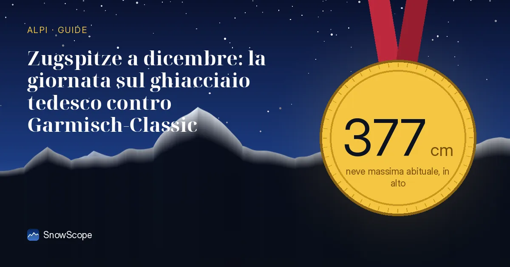

Zugspitze a dicembre: la giornata sul ghiacciaio tedesco contro Garmisch-Classic
A metà dicembre, l'altopiano glaciale della Zugspitze si trova sotto una neve profonda mentre la zona più bassa di Garmisch-Classic mostra una copertura più sottile. Entrambe le aree costano circa EUR 70 per un giornaliero online, ma la profondità della neve a ogni quota racconta una storia diversa su dove spendere i tuoi soldi.
Le previsioni neve in tempo reale per Zugspitze nell'app SnowScopeAltezza neve, allerte powder e mappa 3D, gratis.
Una città, due montagne molto diverse
Garmisch-Partenkirchen si trova ai piedi della vetta più alta della Germania. L'area del ghiacciaio Zugspitze va dalla stazione a valle a 995 m fino a 2627 m, con 16 km di piste servite da 38 impianti. Garmisch-Classic si estende su 38 km di piste da 727 m a 2047 m con 18 impianti, tutto all'interno della stessa città.
A dicembre, la scelta tra le due è chiara ma costosa. Puoi pagare per neve profonda affidabile su un piccolo altopiano glaciale, oppure più terreno ma copertura incerta più in basso.


Dove la neve è sicura a dicembre
La cima della Zugspitze a 2627 m ha avuto 30 cm o più in ogni singolo inverno durante la settimana dal 15 al 21 dicembre in 46 anni di registrazioni. Nella settimana di Natale, il 96 % degli inverni aveva 60 cm o più. Anche un anno magro—il tipo che accade una volta ogni dieci inverni—mantiene 62 cm lì il 15 dicembre. L'inverno scorso ha lasciato 80 cm.
La cima di Garmisch-Classic (2047 m) ha avuto 30 cm quella stessa settimana nel 89 % degli inverni, ma la sua mezza montagna (1387 m) solo nel 48 % degli inverni. La base a 727 m vede solo 6 cm tipici il 15 dicembre. Per sciare a dicembre, solo la cima della Zugspitze e gli impianti superiori di Garmisch-Classic sono affidabili.
Profondità della neve per data a dicembre
Sulla cima del ghiacciaio Zugspitze, aspettati 81 cm il 1° dicembre, 122 cm il 15 dicembre, e 144 cm il 24 dicembre. A mezza montagna (1811 m), i dati sono 35, 52 e 67 cm. La stazione a valle di base ha in media solo 7, 12 e 14 cm negli stessi periodi—non è sufficiente per sciare.
La cima di Garmisch-Classic cresce da 46 cm (1 dic) a 57 cm (15 dic) a 71 cm (24 dic), mentre la sua mezza montagna passa da 24 cm a 28 cm a 36 cm. Entrambe le aree vedono neve più abbondante da fine dicembre in poi, ma inizio dicembre su Garmisch-Classic è sottile tranne che in vetta.
Cosa significano questi numeri per una giornata a dicembre
Se hai bel tempo, il ghiacciaio Zugspitze offre condizioni certe: un altopiano ampio e gentile dove la copertura è profonda e stabile da inizio dicembre. Le piste non sono lunghe, ma la neve è affidabile. Se una tempesta chiude l'altopiano, non hai un piano B su quella montagna.
Garmisch-Classic offre più varietà e più piste, ma gli sciatori di dicembre devono rimanere sugli impianti superiori. La copertura a mezza montagna è incerta; la base è inutilizzabile. Il compromesso è il terreno per una copertura che si assottiglia.
Prezzi dei giornalieri e l'opzione stagionale
Un giornaliero per adulti sulla Zugspitze costa EUR 70,50 online per 2026-27, incluso il viaggio con la funivia o il treno a cremagliera. Garmisch-Classic è EUR 69 online. I siti ufficiali indicano che i prezzi alla cassa sono più alti di quelli online. Nessun resort elenca un abbonamento di 6 giorni sulla pagina principale dei prezzi.
Il valore di dicembre risiede nel giornaliero acquistato online, non nell'abbonamento settimanale. Scegli la tua area in base alle previsioni, compra online, e tieni entrambe le montagne in mente come piani di riserva se una chiude o il tempo peggiora.
Come questo dicembre si confronta con il passato
La neve in dicembre sulla cima della Zugspitze si è mantenuta stabile: la profondità tipica del 15 dicembre era 112 cm nei primi 15 inverni di registrazioni (1980-95) e 115 cm nei più recenti 15 (2011-26). L'inverno scorso era 80 cm, sotto la mediana recente ma comunque affidabilmente sciabile.
La mezza montagna di Garmisch-Classic racconta una storia meno incoraggiante. La profondità di dicembre lì è scesa da 54 cm tipici negli inverni precedenti a 47 cm in quelli recenti. Questo trend invernale è lieve, non drammatico, ma conta per un resort che dipende dalle prenotazioni di dicembre.
Consigli per sciatori
- Prenota il tuo giornaliero online prima di arrivare: è più economico del prezzo alla cassa.
- Sulla Zugspitze, utilizza le piste del ghiacciaio e scendi con la funivia o il treno; la neve di dicembre alla base della valle è troppo sottile per sciare.
- Su Garmisch-Classic a metà dicembre, utilizza solo i due impianti superiori a meno che arrivi neve fresca; la quota media ha 30 cm di copertura in meno della metà dei dicembri passati.
- Controlla il bollettino valanghe bavarese (Lawinenwarndienst Bayern) prima di qualsiasi sciata fuoripista sul ghiacciaio della Zugspitze.
- Se l'altopiano della Zugspitze è previsto che chiuda (tempesta o freddo estremo), gli impianti superiori di Garmisch-Classic diventano la tua opzione di dicembre; controlla le previsioni la sera prima.
Su questi numeri
Le altezze neve delle località sono la neve più alta sui pendii superiori alla data indicata; sono stime per un'area, non una misura in un punto. Le previsioni possono cambiare. Leggi sempre il bollettino valanghe ufficiale prima del fuoripista.
Bollettini valanghe ufficiali: Lawinenwarndienst Bayern
Cita questo articolo
Per ricerca, didattica o stampa: numeri e grafici sono liberamente riutilizzabili con licenza CC BY 4.0 citando così.
SnowScope (2026), Zugspitze a dicembre: la giornata sul ghiacciaio tedesco contro Garmisch-Classic, https://snowscope.app/blog/it/2026/11/zugspitze-december-skiing-germany-glacier-price.html, consultato il 2026-11-14
SnowScope (Atlas Labs). (2026, November 14). Zugspitze a dicembre: la giornata sul ghiacciaio tedesco contro Garmisch-Classic. SnowScope snow reports. https://snowscope.app/blog/it/2026/11/zugspitze-december-skiing-germany-glacier-price.html
BibTeX
@misc{snowscope2026zugspitzedecemberskiingg,
author = {{SnowScope (Atlas Labs)}},
title = {Zugspitze a dicembre: la giornata sul ghiacciaio tedesco contro Garmisch-Classic},
year = {2026},
month = nov,
howpublished = {\url{https://snowscope.app/blog/it/2026/11/zugspitze-december-skiing-germany-glacier-price.html}},
note = {Published 2026-11-14 13:29 UTC; accessed 2026-11-14}
}· CC BY 4.0 · Metodi, dati e strumenti →
Zugspitze: neve e temperatura per quota, quest'inverno vs lo scorso (strumenti) →
Segui Zugspitze
Gratis: un messaggio quando arriva la neve e il meteo ogni mattina.